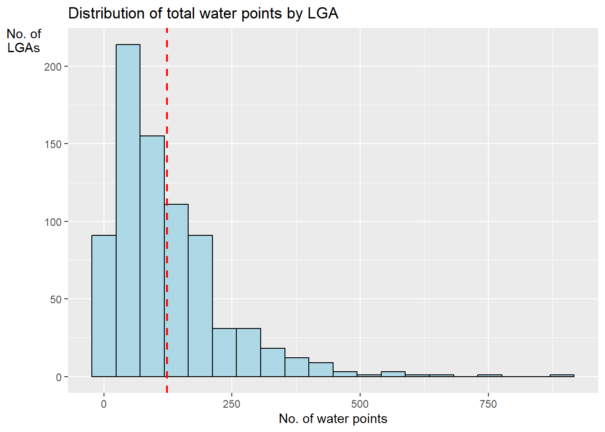

pacman::p_load(sf, tidyverse, readr, funModeling)In-Class Exercise - Geospatial Data Wrangling
Session 2
1 Installing and Loading R Packages
1.1 Libraries - sf & tidyverse
2 Handling Geospatial data
2.1 Import shp file - Geospatial data
nga = st_read(dsn = "data/geospatial",
layer = "nga_admbnda_adm2") %>% st_transform(crs = 26391)Reading layer `nga_admbnda_adm2' from data source
`C:\p-haas\IS415\In-class_Ex\In-class_Ex02\data\geospatial'
using driver `ESRI Shapefile'
Simple feature collection with 774 features and 16 fields
Geometry type: MULTIPOLYGON
Dimension: XY
Bounding box: xmin: 2.668534 ymin: 4.273007 xmax: 14.67882 ymax: 13.89442
Geodetic CRS: WGS 842.2 Understanding the data
2.2.1 Nigeria Level-2 Administrative Boundary (example)
st_geometry(nga)Geometry set for 774 features
Geometry type: MULTIPOLYGON
Dimension: XY
Bounding box: xmin: 28879.72 ymin: 30292.37 xmax: 1343798 ymax: 1094244
Projected CRS: Minna / Nigeria West Belt
First 5 geometries:glimpse(nga)Rows: 774
Columns: 17
$ Shape_Leng <dbl> 0.2370744, 0.2624772, 3.0753158, 2.5379842, 0.6871498, 1.06…
$ Shape_Area <dbl> 0.0015239210, 0.0035311037, 0.3268678399, 0.0683785064, 0.0…
$ ADM2_EN <chr> "Aba North", "Aba South", "Abadam", "Abaji", "Abak", "Abaka…
$ ADM2_PCODE <chr> "NG001001", "NG001002", "NG008001", "NG015001", "NG003001",…
$ ADM2_REF <chr> "Aba North", "Aba South", "Abadam", "Abaji", "Abak", "Abaka…
$ ADM2ALT1EN <chr> NA, NA, NA, NA, NA, NA, NA, NA, NA, NA, NA, NA, NA, NA, NA,…
$ ADM2ALT2EN <chr> NA, NA, NA, NA, NA, NA, NA, NA, NA, NA, NA, NA, NA, NA, NA,…
$ ADM1_EN <chr> "Abia", "Abia", "Borno", "Federal Capital Territory", "Akwa…
$ ADM1_PCODE <chr> "NG001", "NG001", "NG008", "NG015", "NG003", "NG011", "NG02…
$ ADM0_EN <chr> "Nigeria", "Nigeria", "Nigeria", "Nigeria", "Nigeria", "Nig…
$ ADM0_PCODE <chr> "NG", "NG", "NG", "NG", "NG", "NG", "NG", "NG", "NG", "NG",…
$ date <date> 2016-11-29, 2016-11-29, 2016-11-29, 2016-11-29, 2016-11-29…
$ validOn <date> 2019-04-17, 2019-04-17, 2019-04-17, 2019-04-17, 2019-04-17…
$ validTo <date> NA, NA, NA, NA, NA, NA, NA, NA, NA, NA, NA, NA, NA, NA, NA…
$ SD_EN <chr> "Abia South", "Abia South", "Borno North", "Federal Capital…
$ SD_PCODE <chr> "NG00103", "NG00103", "NG00802", "NG01501", "NG00302", "NG0…
$ geometry <MULTIPOLYGON [m]> MULTIPOLYGON (((552560.3 12..., MULTIPOLYGON (…# head(nga)2.3 Importing Aspatial data into R Workbook
2.3.1 Import csv file - Aspatial data
wpdx_nigeria = filter(read_csv("data/aspatial/Water_Point_Data_Exchange_-_Plus__WPdx__.csv"), `#clean_country_name` == "Nigeria")2.3.2 Convert Aspatial into Geospatial data
wpdx_nigeria$Geometry = st_as_sfc(wpdx_nigeria$`New Georeferenced Column`)
wpdx_sf = st_sf(wpdx_nigeria, crs = 4326) %>% st_transform(crs = 26391)
wpdx_sfSimple feature collection with 95008 features and 70 fields
Geometry type: POINT
Dimension: XY
Bounding box: xmin: 32536.82 ymin: 33461.24 xmax: 1292096 ymax: 1091052
Projected CRS: Minna / Nigeria West Belt
# A tibble: 95,008 × 71
row_id `#source` #lat_…¹ #lon_…² #repo…³ #stat…⁴ #wate…⁵ #wate…⁶ #wate…⁷
* <dbl> <chr> <dbl> <dbl> <chr> <chr> <chr> <chr> <chr>
1 429068 GRID3 7.98 5.12 08/29/… Unknown <NA> <NA> Tapsta…
2 222071 Federal Minis… 6.96 3.60 08/16/… Yes Boreho… Well Mechan…
3 160612 WaterAid 6.49 7.93 12/04/… Yes Boreho… Well Hand P…
4 160669 WaterAid 6.73 7.65 12/04/… Yes Boreho… Well <NA>
5 160642 WaterAid 6.78 7.66 12/04/… Yes Boreho… Well Hand P…
6 160628 WaterAid 6.96 7.78 12/04/… Yes Boreho… Well Hand P…
7 160632 WaterAid 7.02 7.84 12/04/… Yes Boreho… Well Hand P…
8 642747 Living Water … 7.33 8.98 10/03/… Yes Boreho… Well Mechan…
9 642456 Living Water … 7.17 9.11 10/03/… Yes Boreho… Well Hand P…
10 641347 Living Water … 7.20 9.22 03/28/… Yes Boreho… Well Hand P…
# … with 94,998 more rows, 62 more variables: `#water_tech_category` <chr>,
# `#facility_type` <chr>, `#clean_country_name` <chr>, `#clean_adm1` <chr>,
# `#clean_adm2` <chr>, `#clean_adm3` <chr>, `#clean_adm4` <chr>,
# `#install_year` <dbl>, `#installer` <chr>, `#rehab_year` <lgl>,
# `#rehabilitator` <lgl>, `#management_clean` <chr>, `#status_clean` <chr>,
# `#pay` <chr>, `#fecal_coliform_presence` <chr>,
# `#fecal_coliform_value` <dbl>, `#subjective_quality` <chr>, …3 Geospatial Data Cleaning
3.1 Exclude redundant fields
nga <- nga %>%
select(c(3:4, 8:9))3.2 Checking for duplicates with IFELSE() statement
duplicated_LGA <- nga$ADM2_EN[duplicated(nga$ADM2_EN)==TRUE]
nga$ADM2_EN = ifelse(nga$ADM2_EN %in% duplicated_LGA, paste(nga$ADM2_EN, nga$ADM1_EN, sep=", "), nga$ADM2_EN)4 Data Wrangling for Water Point Data
freq(data = wpdx_sf, input = '#status_clean')
#status_clean frequency percentage cumulative_perc
1 Functional 45883 48.29 48.29
2 Non-Functional 29385 30.93 79.22
3 <NA> 10656 11.22 90.44
4 Functional but needs repair 4579 4.82 95.26
5 Non-Functional due to dry season 2403 2.53 97.79
6 Functional but not in use 1686 1.77 99.56
7 Abandoned/Decommissioned 234 0.25 99.81
8 Abandoned 175 0.18 99.99
9 Non functional due to dry season 7 0.01 100.00wp_sf_nga <- wpdx_sf %>%
rename(status_clean = '#status_clean') %>%
select(status_clean) %>%
mutate(status_clean = replace_na(
status_clean, "unknown"))4.1 Extracting Water Point Data
wp_functional <- wp_sf_nga %>%
filter(status_clean %in%
c("Functional",
"Functional but not in use",
"Functional but needs repair"))wp_nonfunctional <- wp_sf_nga %>%
filter(status_clean %in%
c("Abandoned/Decommissioned",
"Abandoned",
"Non-Functional due to dry season",
"Non-Functional",
"Non functional due to dry season"))wp_unknown <- wp_sf_nga %>%
filter(status_clean == "unknown")freq(data = wp_functional,
input = 'status_clean')
status_clean frequency percentage cumulative_perc
1 Functional 45883 87.99 87.99
2 Functional but needs repair 4579 8.78 96.77
3 Functional but not in use 1686 3.23 100.00freq(data = wp_nonfunctional,
input = 'status_clean')
status_clean frequency percentage cumulative_perc
1 Non-Functional 29385 91.25 91.25
2 Non-Functional due to dry season 2403 7.46 98.71
3 Abandoned/Decommissioned 234 0.73 99.44
4 Abandoned 175 0.54 99.98
5 Non functional due to dry season 7 0.02 100.00freq(data = wp_unknown,
input = 'status_clean')
status_clean frequency percentage cumulative_perc
1 unknown 10656 100 1004.2 Performing Point-in-Polygon Count
NGA_wp <- nga %>%
mutate(`total_wp` = lengths(
st_intersects(nga, wp_sf_nga))) %>%
mutate(`wp_functional` = lengths(
st_intersects(nga, wp_functional))) %>%
mutate(`wp_nonfunctional` = lengths(
st_intersects(nga, wp_nonfunctional))) %>%
mutate(`wp_unknown` = lengths(
st_intersects(nga, wp_unknown)))4.3 Visualing attributes by using statistical graphs
ggplot(data = NGA_wp,
aes(x = total_wp)) +
geom_histogram(bins=20,
color="black",
fill="light blue") +
geom_vline(aes(xintercept=mean(
total_wp, na.rm=T)),
color="red",
linetype="dashed",
size=0.8) +
ggtitle("Distribution of total water points by LGA") +
xlab("No. of water points") +
ylab("No. of\nLGAs") +
theme(axis.title.y=element_text(angle = 0))
4.4 Saving the analytical data in rds format
write_rds(NGA_wp, "data/rds/NGA_wp.rds")